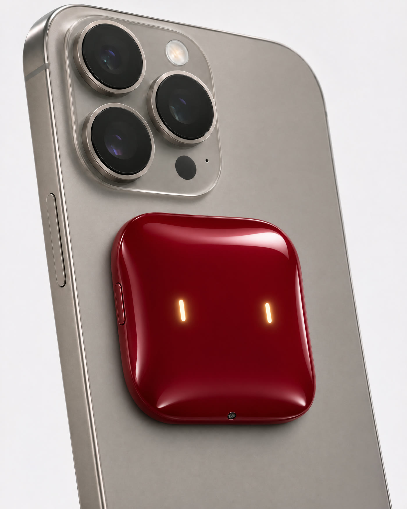
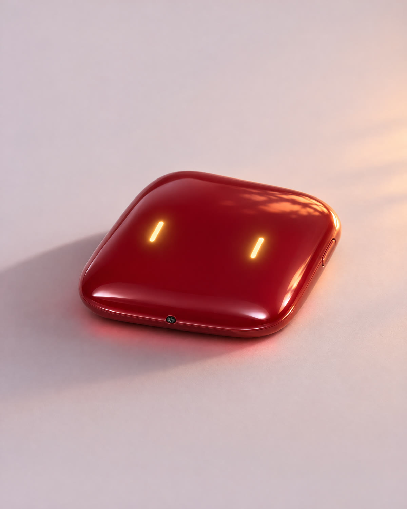
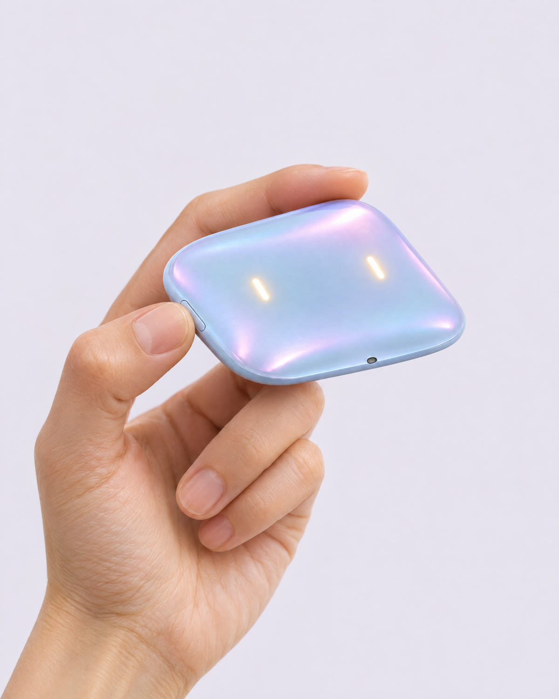
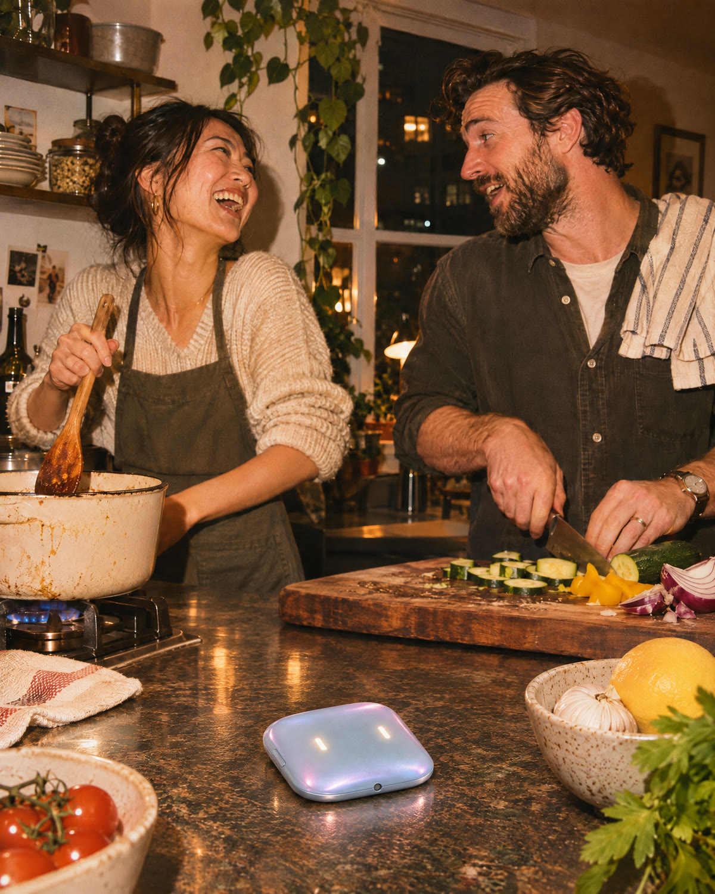
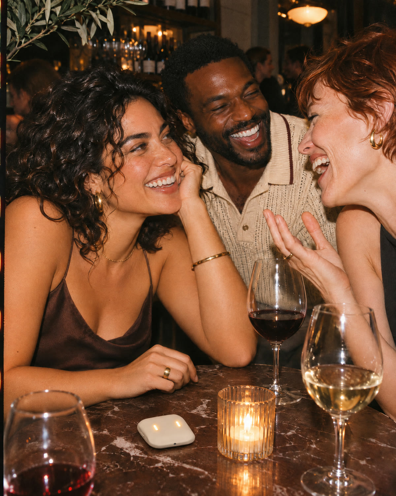

press. his eyes light up.
try it.
founder batch 703 of 1,000 reserved
reserve · $10
pip sits on the table while you talk. afterwards you get the notes, and how you came across.
$79 unlimited transcription ships q1 2027
how it works
try it.

meetings, dinners, one-to-ones.
the notes, and notes on you.
the app
‹ conversations
notesyou
summary
maya wants to move the launch to 3 march so support gets two weeks of training. you agreed to drop referrals from v1.
key points
next steps
‹ conversations
notesyou
pip saysyou were right about the dates. you just said it four times.
who talked
try next timeask maya what she'd cut before you suggest it.
pip vs. a note-taker
the object

ask first


the larkin lab
the missionmake humans better at each other.
the colours
founder edition
$79one pip.
no monthly fee, ever.
founder batch703 / 1,000 reserved
refundable any time before he ships.
design renders. the final pip may differ a little.
questions
no. only while his eyes are on. press to start, press to stop.
the notes, in your account. the sound is deleted once it's turned into words.
yes. always ask first, and follow the rules where you live.
it holds a founder pip with unlimited transcription. refundable any time before he ships.